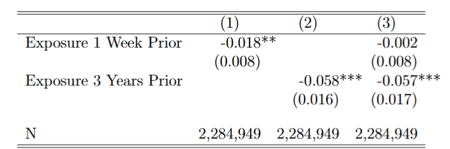

Hi, I am Xin Jin, a Ph.D. candidate in Economics at the University of Tennessee, Knoxville.
My research lies at the intersection of education, environment, and labor economics.
My current work focuses on how environmental shocks and education policies shape students' academic and social outcomes.
I am on the 2025-2026 job market! If you have any questions about me or my research, please feel free to reach out to me below!
“Professor Jin, did an amazing job this semester. She is early in her teaching career but off to a great start.”
"She did an amazing job. The class sessions were always interesting and she helped me really learn the information in the course.
I really enjoyed her teaching style and it was obvious that she went the extra mile to ensure we were really understanding the
information. She also told us stories which were interesting and helped me see the concepts on a global scale. I would one hundred
percent recommend her to anyone taking this course.”
“You did a fantastic job with your teaching style!”
“Ms. Jin did an outstanding job instructing ECON 311. I personally have struggled in the course since day one however she was always
making time for me to come to office hours even on weekends. I really enjoyed having her as an instructor and she has helped me
succeed in this course by offering a helping hand anytime I felt lost or confused. In class she always makes sure we are understanding
what is being taught and she always makes a point to remind us that if we need help she is always available via office hours.
If it was not for her teaching the section of ECON 311 that I was in I am not sure I would have done as well as I am currently.”
“Really good professor probably one of the better ones I've had.”
Teaching Assistant
University of Tennessee
Ph.D. courses:
Econ 513: Macroeconomic Theory — Fall 2022, Fall 2023
Econ 514: Macroeconomic Theory — Spring 2023
Undergraduate courses:
Econ 381: Introduction to Econometrics — Spring 2025, Fall 2025
Econ 213: Principles of Macroeconomics — Fall 2021, Spring 2022
Econ 201: Introductory Economics: A Survey Course — Fall 2021, Spring 2022
Abstract:
Earthquakes impose a significant adverse impact on local development.
Although the direct damages to infrastructure and human life are evident,
the disruptions to educational outcomes are less apparent.
Using administrative student-level panel data and precise measures of local ground tremors,
I investigate the effect of earthquakes on elementary school students' low-stakes test performance.
I exploit plausibly exogenous variation in the timing of earthquakes within a difference-in-differences
event study framework, while addressing school switching by including student fixed effects and adopting
an intent-to-treat approach. The findings show that students are more likely to switch to a new school
after earthquake exposure. Affected students’ test scores decline by 2.5 percent of a standard deviation
in the year of first exposure to an earthquake. The effect appears transitory, as scores recover two years
after the exposure. Analysis of earthquake characteristics reveals that test performance falls more sharply
in the year of exposure when shaking intensity is higher and when the earthquake occurs shortly before the
exam.
Abstract:
This study examines how short-term and long-term exposure to air pollution affect students'
performance on high-stakes tests. We focus on a centralized public high school admission exam
in the metropolitan area of Mexico City, using geographic and temporal variation in PM2.5
levels at the school level, combined with individual administrative data on test scores. A $10 μg/m³
increase in exposure the week of the exam lowers test scores by 1.8% of a standard deviation when
estimated separately. When estimated jointly with long-term exposure, the effect of short-term exposure
falls to essentially zero and increases in long-term exposure reduce test scores by 5.7% of a standard
deviation. The effect is largest for boys and lower-income students. Estimating the short-term impacts of
air pollution on test scores and cognition may misattribute the impacts of long-term exposure to short-term variation.
Presentations: ASHEcon Annual Conference (2025),
SEA Annual Meeting (2024),
AEFP Annual Conference (2024),
Development Economics in the South Workshop (2024)

Effects of Short- and Long-term Exposure to Air Pollution on Test Scores
Beyond Tuition: Assessing the Impact of Free Community College on Local Arrests
Abstract:
This study investigates the causal effect of a free community college program on local criminal activity by
focusing on the staggered, statewide implementation of the Tennessee Promise program. Leveraging the variation
in implementation timing and agency-level arrest data, we employ a difference-in-differences event-study approach
to assess the spillover effects of financial support on arrest rates. The results indicate that Tennessee Promise
reduces the arrest rate among young individuals in adopting counties compared to those that did not implement the program.
Furthermore, the effects are particularly pronounced in counties with community colleges.